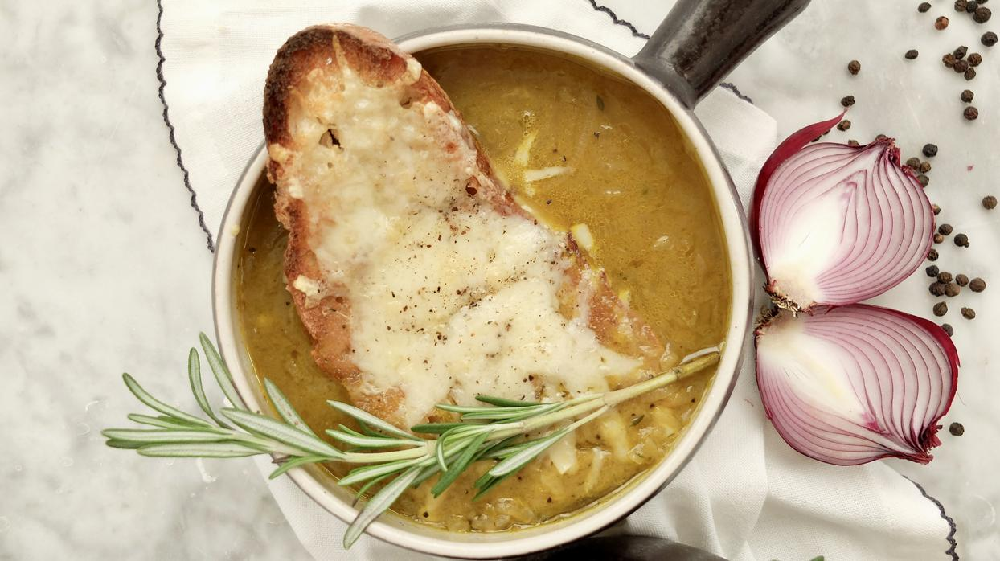
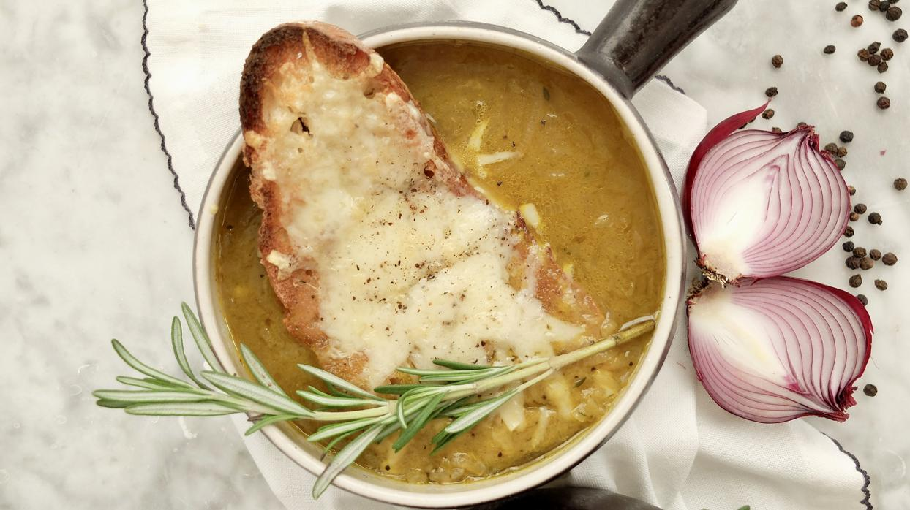
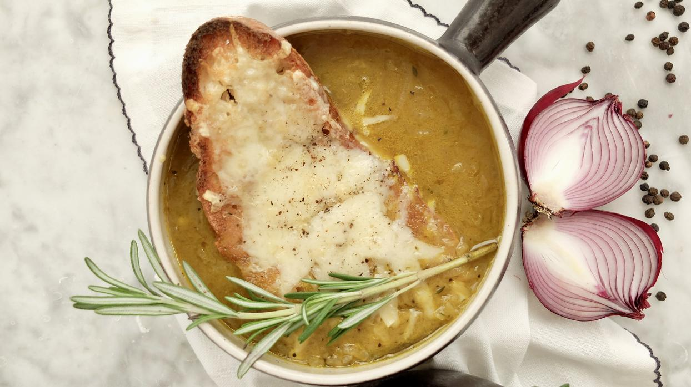

Somos líderes en sopas y platos otoñales de todos los tipos. Situados en la zona norte del pueblo al sur de la ciudad superior del centro de Galicia, adjunto al Hotel Bienestar.
Nuestra especialidad, la sopa de cebolla, ha sido el plato estrella desde su incoporación al menú. Y, como estamos de aniversario, ¡os dejamos la receta para que la probéis en vuestra propia casa!
Sopa de cebolla

Para más recetas como ésta, visita nuestro restaurante, donde siempre es otoño. ¡Si vienes el día de tu cumple te regalaremos tarta!
 
